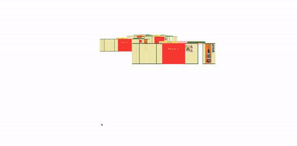

Behind the Project
The Gist
The Barnes Witz is an attempt to envision—first—the Philadelphia Barnes Foundation museum collection as a digital experience designed for teens and—second—to create a hypothetical starting point for the museum to offer itself as a community space for high school students.
And the name "Witz"—is a combination of "whiz" and "wit," a Philly-specific reference to ordering a cheesesteak "wit"—or with—onions and Cheez Whiz.

The Inspiration
Last summer I worked on a couple of freelance projects for the Barnes’ education department including their 2018-19 Annual Report for Education Outreach Programs.

The images I was given to work with made me feel very bittersweet.

These youngsters have expressions that speak to the innocence, hope, and joy of having your whole life ahead of you.

The bitter side of that is knowing how treacherous Philadelphia can be for its youth.
Records of teens killed or injured by gun violence in Philadelphia are the 2nd highest in the US, based an interactive map in the Gun Violence Archive. 99 incidents were recorded as of November 2020. In comparison, the Twin Cities report 27 incidents and New York: 54.

As reported in the Philadelphia Inquirer in August of this year, “People under 18 have made up nearly one in 10 of the city’s shooting victims this year, more than any year since at least 2015.”

When I was a teenager, I was safely tucked away in a commuter town in Connecticut — but even so, felt anxious, insecure, and largely out of place at school. Working on the Barnes Education Report reminded me of when a high school art teacher took my class to the Whitney Biennial. In that moment, my first visit to the Whitney was a much-needed reminder that the world was larger than my high school. I bought a t-shirt on that trip, which I still have — and it's even splattered with ink...

As I completed the Barnes Report, I noticed that the specific education programming ended in 7th grade — in my mind, just at the beginning of when it gets really tough.
This project grew out of my desire to bring museums, which provide both a zooming out in the seeing of new things, and a focus in what they might inspire — to teens, no matter where they are, or where they're from.

Philadelphia also recently suffered extreme cuts to its Arts and Culture budget, which directly affects hundreds of arts-based opportunities for the youth of the city. Studies and reporting, such as Room to Rise, an inter-museum report related to teen programming in arts museums, show that there are a great many benefits in providing teens with the impetus to focus on and direct their creative instincts in a productive way.
The Task at Hand
A Problem Statement
I began my project by mulling over the following questions:
- How can a museum reach and be interesting to a next generation of screen-oriented supporters and patrons?
- How can a museum be accessible digitally in a manner that acknowledges its physical context?
- How can the Barnes utilize its history of being rooted in education to reach teens?
- What can a web space for a museum be?
- Can a non-social-media web space instill a sense of community and belonging in its users?
I also had, in the back of my mind, my favorite reading assignment from our Design in Context: Dematerialization of Screen Space by Jessica Helfand. This essay points out that the Internet's design, to her dismay, runs on a printed-page-oriented display system. She writes:
- "Nowhere do we see the kind of variety, or depth, or topographical distinctions we might expect, given the boundless horizons of Internet space..."
- "Nowhere do we see, or feel, or discover a new sense of place, freed of the shackles of Cartesian logic — space that might ebb and flow, expand and contract, dimensional space, elliptical space, new and unusual space."
- "Homepages, indeed! What could possibly be said to be homey about the web...?"
- "The world of the Internet is its own peculiar galaxy, with its own constellations of information, its own orbits of content. And it is by no means flat."
Toward a Solution
Barnes' History
In moving towards a solution, I spent time doing valuable research. I read more about the Barnes and its founder, Dr. Albert C. Barnes, a scientist who grew up in working-class Philadelphia, and boxed to pay his way through college. After developing an important preventative treatment for infants in 1899, he collected artworks of all kinds, including pieces by Cezanne, Renoir, Matisse, Picasso, Van Gogh, and beyond.


He developed the Foundation with a mission to first and foremost educate the public about art. As the Barnes states in their mission, "Our founder...believed that art had the power to improve minds and transform lives."
Dr. Barnes also organized his collection in iconic "ensembles," which were arranged to create a "visual dialogue" amongst the works, regardless of genre, time period, or artist.
The design studio, Pentagram, incorporated the concept of ensembles in the identity that they developed for the museum upon its controversial relocation to the center of Philadelphia (from its suburbs).
With the rotating 3D carousels that I had in mind, the ensembles would be at the core of my webspace as well, but more on that later. I was lucky to have been able to speak with and gather information from a few other sources.
Research, Data Collection, User Testing Results
My 15-Year Old Brother
I shared the Barnes' existing and already robust digital collection website with my brother, Henry. The site allows users to sift through all of the Foundation's works by color, line, light, and space — in the spirit of Barnes' ensemble organization.
I also shared an early mockup of my web space, and was really intrigued by what he said at the end of our conversation:
If you just made it more exciting, and more — "you're not here because you have to do work on something, you're here because you wanna be here, because you wanna look at this stuff..."
Jen Nadler, Director of preK-12 and Educator Programs at the Barnes Foundation
My conversation with my brother was better crystallized by my following meeting with Jen Nadler, who had no idea what my brother had said, and yet, almost as a direct explanation for my brother's sentiment, noted:
They don't want to be told that this is great art, they want to decide for themselves...
When asked about her understanding of musuem programming for teens, she acknowledged that the Barnes had not focused on teens, but that:
The ones that are really successful really put teens at the center of choosing things... so they decide what they want to learn, they decide what kind of program they can be involved in, and they get to give their opinions. So anytime you can offer choice for them, it captures their interest.
70+ High School Students
Additionally, I contacted my former art teacher, who shared a questionnaire that I wrote with over 70 high school students in Connecticut.
There were a couple of pairings of questions whose results disappointed me. When asked, "Do you consider yourself an artist," over half responded "yes," but when asked, "Have you ever thought about pursuing art professionally," over half said, "No."
Similarly, when asked, "Have you ever thought about making something that could end up in a museum," an overwhelming majority said, "No." Yet, when asked, "Have you ever looked at art in general and through, "I could do that!" the majority responded, "Yes." This showed me that the quandary I felt as a teen still remains — a curiosity of art and following your creative instincts, but the pull to take other things more seriously.
Nonetheless I was happy to see, in response to a question about hypthetical museum teen programming — more said yes or maybe than no. The question becomes, what can make those teens on the fence — the majority being "Maybes" — take a leap?
While I didn't share my site with them, I was able to get insight into what they care about in regards to a website or digital platform (color and photos), and their favorite most joyful experiences on the web (a lot of social media, talking with friends, and YouTube).
I also asked what an "online museum exhibit" brings to mind, and a few of my favorite responses included:
- "Not the same as actually visiting."
- "Online? I prob wouldn't choose to do that."
- "I think it's going to be boring, with a lot of things to see / write down."
- "Just a slideshow of art or a google earth street view type thing."
As I completed this research simultaneously with my deliverables of a web space prototype and the Barnes Witz brand identity, I realized that what I had taken on would fall short of what I really wanted to achieve, but more on that in a bit.
Webspace Process + Iteration
I first developed my web space concept which incorporates z-space scrolling to provide a sense of depth, space, and the unexpected. I combined that with rotating carousels that I had already experimented with during the MAGWD Design Studio course. In addition to being a fairly classic manner of exhibiting a collection of work, I liked that, with a z-space 3D effect, the carousels recreate the Barnes ensembles in a new format of his "visual dialogue" concept, shown in shifting relationships to one another as the carousel rotates.
In working on the web space concept, I took a deeper plunge than intended into programming using Vue.js, which we had been introduced to in the MAGWD Programming course. The good reason for utilizing Vue was its capability to recycle the same code for the various carousels on the page — in this case, each carousel, or ensemble, reuses the same code with different dataset arrays for each grouping of artworks.

There have been many challenges in working with a coding language that I am only vaguely familiar with, but working with GitHub made me take chances. Below you can see the web space at various growing pains stages of development.
Branding Process + Iteration
With the webspace underway, I focused on designing the brand identity, which I settled on after several iterations and paths. I knew that I wanted to work alongside and in deference to the Barnes' existing Pentagram-designed branding.
Once I focused more on the existing identity referencing the ensembles, I was able to conceptualize the Witz lettering referencing the "wall of the "room" that my web space is trying to digitally approximate. The logo works both alongside the existing Barnes identity, as well as on its own, or as a framing device.
I was also happy to incorporate the logo into the webspace as a further reference to the "room" concept.

At Present
Incorporating Feedback
With the two core pillars of my project established, and the research complete, I was stunned by how much more of a beginning point I felt I was at — rather than anywhere near a completed deliverable. Those I had gathered information from had given me consistent directives.
For one, many mentioned the desire to click on a piece to be able to zoom in on and learn more about — without the z-space effect. And also, in speaking with Jen Nadler about teens sharing their voices, and in the success that the Barnes has had in the past when engaging teens in discussions of representation, I became sure that I wanted the Witz to be designed for its users to be able to insert their own artwork or imagery into the carousels — the carousels which also stand for "the canon," and for conversations between humans across time and space.
With time and Javascript not on my side, my limits for functionality led to, in relation to the first directive of a full-page ID card — a click revealing the artwork's artist, title, and year produced.
And in terms of a user's ability to upload their own images — I have not yet succeeded in anything but creating the form to do so.
But, as a designer, I have at least created convincing mock-ups of the functionality I'm after, using AfterEffects, and can collaborate with Vue developers to finalize a project such as this.
ID Card Mock Up

Carousel Upload Mock Up

Final Deliverables
Witz webspace prototype
Conceptualized as one room of the several galleries, the prototype is designed to be accessed through a Witz Homepage hub, which would be accessed through the Barnes' main site homepage menu, as mocked up below.
Witz homepage hub
The homepage hub would be a resource for all things Teen at the Barnes, including an explanation of the intended mission of the digital presentation of the collection as included, and adding a directory map and guide to each room (which would each be represented with its own webspace), as well as coding resources and challenges, listings of events, and links to teen participants' own curated carousel galleries.
Witz Identity + Style Guide
Social Media Animations
I also created Gifs for use in social media — again with the purpose of enticing those "Maybes," and with the understanding and confirmation from my research that social media and peer word-of-mouth is crucial to programming's success. The work shown in the first Gif below is actually souced from the ICA Boston teen site, which Jen Nadler pointed me to as a good example of teens being given full reign of their own programming, and encouraged to share their resulting work on the museum's website.

Next Steps
Contextualizing Scale
I haven't yet mentioned another invaluable mentor and source of important feedback, the Barnes' Art Director, Olivia Verdugo. Having given me the opportunity to complete the freelance work for the Barnes, it is really her I have to thank for my exposure to the museum and its collection and mission. And here she is recreating one of the Barnes works!
I was in touch with her throughout the development of the Witz and one of her insights struck me the most, because she reflected on her own experience of mainly viewing the Barnes collection on a computer as well. With the below feedback, I began imagining incorporating works' scale in relationship to each other in each ensemble.
My perspective on scale with these things is that I am always looking at all of these works on a computer and my experiene when I enter the physical space of the galleries is that I am always shocked by how scale effects my perception of the works. I think that that's something which is very challenging to disseminate through digital means. It's really hard to communicate that scale when you're not in the physical space.
Guide to Creative Coding
Another great idea brought up by my classmate, Kelsey Kuno, was the idea of the Witz also being a source of teaching coding to teens. Jen Nadler had mentioned that corporations are invested in providing support so teens can be introduced to more careers in the arts, so I've now been envisioning making an accompanying Beginner's Guide to Creating Coding.
Full Circle
Ultimately, the list goes ON!
Despite feeling that there's a lot of unfinished business her, it's been nice to return to my initial conversation with my brother, and to hear in his words what my goal had been all along:
I feel like [the webspace] would be really good for people who want to get into art and who want to go see stuff but who also aren't sure if they really want to... I feel like it would be good for them to go here first and look at the art on a screen but also in a more intimate way than just a random photo on the internet... and that it would inspire them to then go to the actual museum...
So, thank you for taking the time to learn more about my journey with this project! And thank you to Lafe Smith, my MCAD MAGWD advisor, and my classmates, for such a valuable semester and program together.